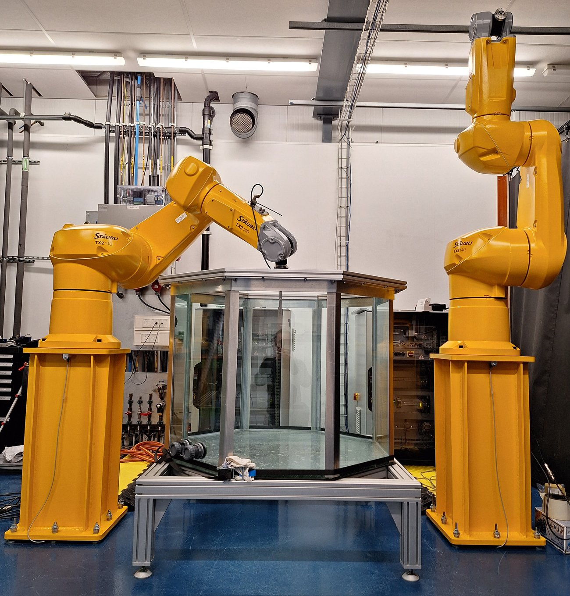
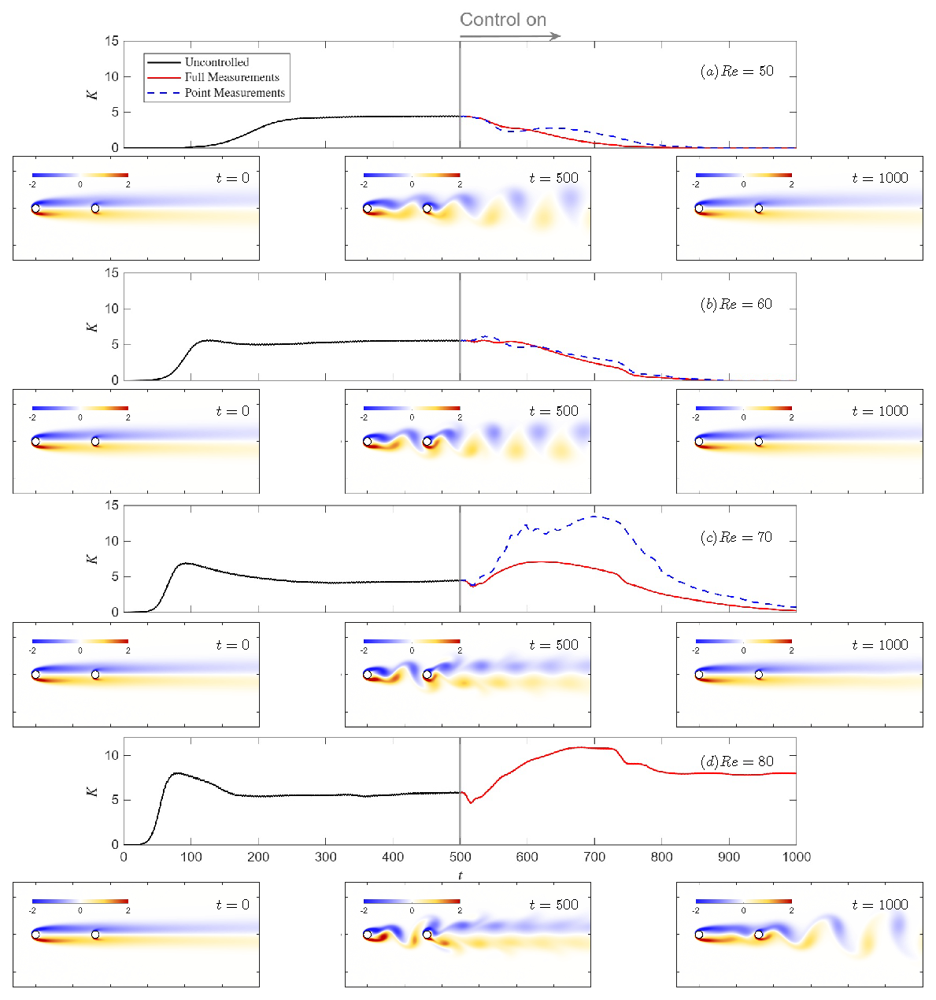
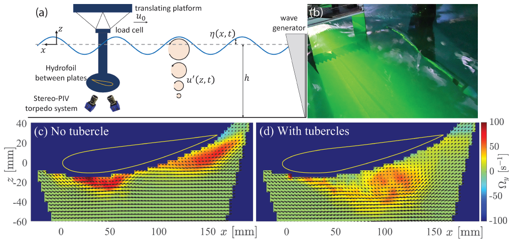
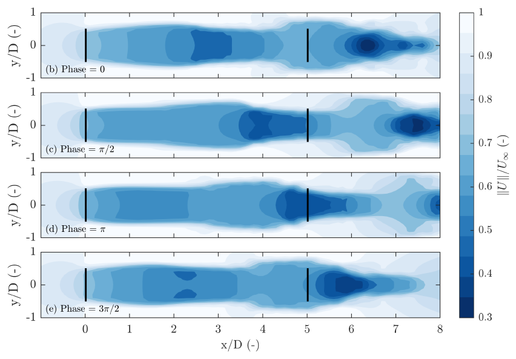
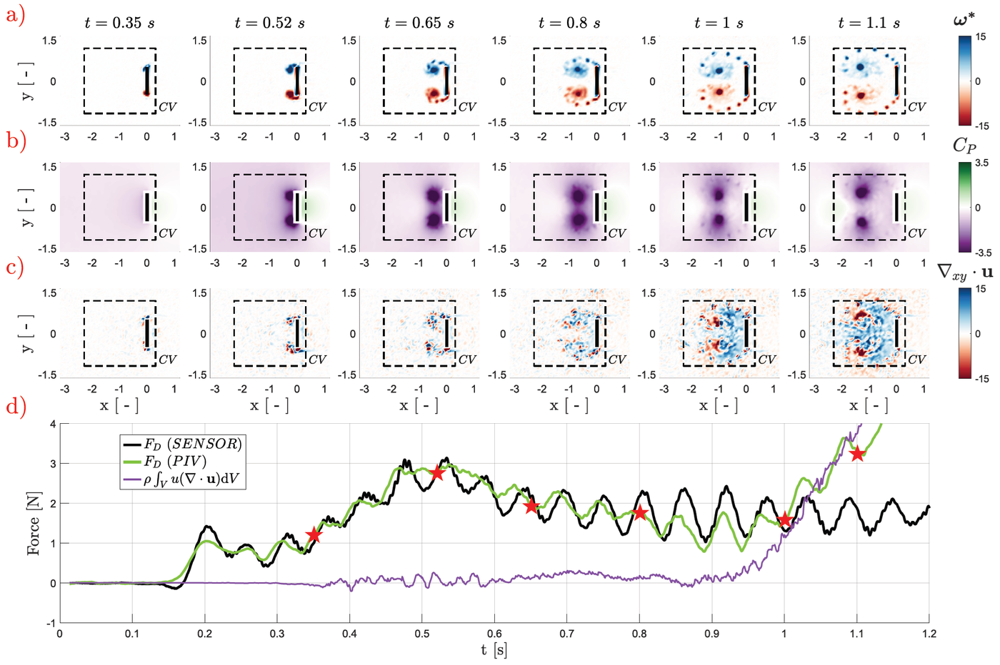
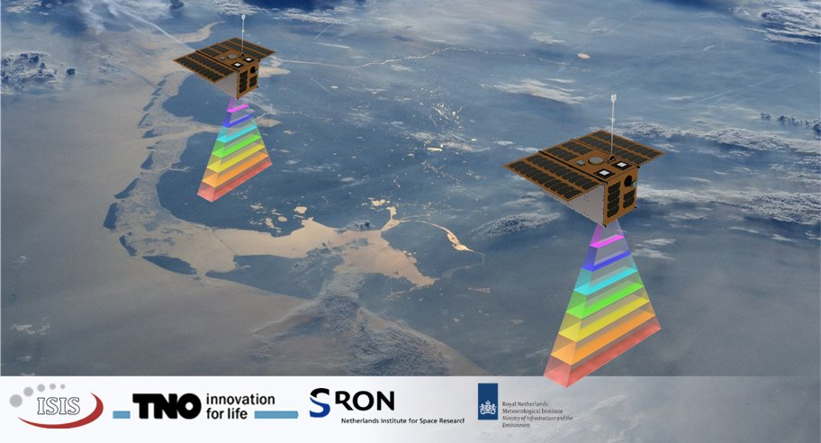

Industrial robotics for fluid dynamics experimentation

Experiments on unsteady fluid dynamics are in most cases based on bespoke actuation setups. These often provide limited degrees of freedom, and require considerable effort to validate for complex motions. We use commercial robotic equipment with guaranteed, tested, and quantified precision and repeatability, and user-friendly control software.
Aerodynamics of mosquito reproduction
Some mosquito species copulate while flying. It is known that during mate selection and mating the partners modulate their wing beat frequency. What role this plays from an aerodynamic standpoint, and its effect on the energetics of the mating pair remains unknown. We have been tracking free-flight copulatory kinematics and analysing the flow interactions between partners.
Wing-wake interaction during reversal motions
Predictive models of unsteady aerodynamics largely ignore time-history effects, while these are known to be important for oscillatory systems such as in flapping flight, where energy imparted to the flow in one wing stroke can be recovered in the following stroke in a process known as "wake capture". No general model for wake capture exists, and its scaling with kinematic parameters is uncertain, prompting us to investigate the behaviour of wing-wake interaction in simplified kinematic settings.
Active control in tandem cylinder wakes

Flow around tandem cylinders exhibits complex wake interactions that lead to amplified unsteady loads. Active suppression of vortex shedding in such systems has so far only been achieved using open-loop approaches, which require continual energy input. We developed a closed-loop control framework, based on a weakly nonlinear analysis, for suppressing vortex shedding in tandem-cylinder flows where control effort also reduces to zero for long times.
Nonlinear modelling of shock buffet
In transonic flow, shock-boundary-layer interactions can give rise to transonic buffet, degrading maneuverability through unsteady aerodynamic loads. Two-dimensional buffet represents a canonical example of a global instability for which reduced-order modeling remains challenging due to nonlinearity, sharp spatial gradients, and the coexistence of an unstable equilibrium with an attracting limit cycle. Commonly, reduced-order models of such phenomena capture nonlinear dynamics only in aerodynamic observables, such as lift and drag forces, while prediction of the full flow state is achieved through linear representations valid only near the unstable equilibrium or on the limit cycle. We therefore have been exploring modeling the nonlinear evolution of the full flow field by extending established data-driven spectral-submanifold approaches via a novel hybrid manifold parameterization combining polynomial and radial-basis-function representations. Our approach retains modal interpretability near the equilibrium while improving the accuracy and robustness of the manifold approximation.
Bio-inspired leading edge stall control under wave forcing

Waves impose periodic fluctuations in velocity magnitude and orientation, causing a steadily translating hydrofoil to undergo dynamic stall at large wave forcing amplitudes. We characterised this hydrofoil–wave interaction and, in an attempt at passive flow control, applied a bio-inspired tubercle geometry along the hydrofoil leading edge. This geometry is known to delay stall in steady cases, but has scarcely been studied in unsteady flow conditions. The tubercles were found to qualitatively modify the flow behaviour during dynamic stall, thereby attenuating drag force fluctuations, with potential consequences for fatigue characteristics of offshore equipment.
Vertical axis wind turbines in unsteady conditions
Vertical axis (or cross-flow) wind turbines have been proposed as a solution for small-scale urban energy-harvesting applications. In these applications, a turbine will encounter highly unsteady gusting flows. It has recently been observed that horizontal wind turbines' efficiency can actually benefit from such unsteadiness. We have been investigating this effect for vertical axis turbines using a programmable fan-array wind tunnel.
Active wake mixing control in wind farms

In wind farms, some turbines inevitably operate in the wake of others, where less energy is available for extraction. Using data-driven methods on a low-order representation of a minimal wind farm, we have been investigating how individual turbines should behave to most optimally modify their wake for the benefit of turbines downstream and, with the right trade-offs, the farm as a whole.
Reconstructing forces from flow fields

It is possible, via several formulations, to reconstruct the fluid-dynamic force on a solid body from information on the flow around it. We have been investigating how these methods perform in accelerating systems, especially where only two-dimensional information is known about an inherently three-dimensional flow. We provide a criterion, based on flowfield divergence, which indicates the validity of the force reconstruction from such two-dimensional measurements in unsteady flows.
CO2 emission rate estimation from satellite data

To measure the rate of CO2 emission from point sources such as powerplants, it is possible to use satellite-derived instantaneous snapshot measurements of gas concentrations in conjunction with windspeed data predicted from meteorological observations. This approach leads however to large uncertainties in emission rate predictions. We explored the possibility of using unique dual-snapshot data from the upcoming Twin Anthropogenic Greenhouse Gas Observers (TANGO) mission to directly measure plume velocity, and so reduce uncertainty on emission rate estimations. (Image: SRON)